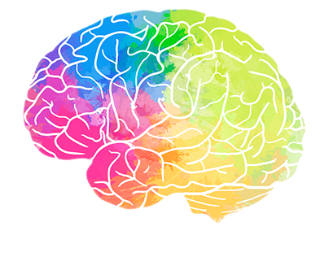
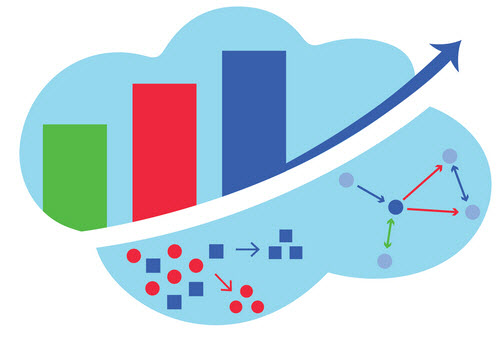

Alyssa June Pacleb
alyssapacleb@utexas.edu
|
About me
Hello, I'm Alyssa June! I earned my B.S. in Neuroscience from the University of Texas at Austin.
In my coursework, I realized I had a love for quantitative thinking resulting in the addition of two minors to my degree:
Elements of Computing and Applied Statistical Modeling.
|
 |
Neuroscience
In my Neuroscience degree, I have learned the processes that are responsible for how the
central and peripheral nervous systems function. The study of neuroscience is multidisciplinary
and has tested my knowledge of chemistry, physics, genetics, animal behavior, mathematical models, and cell physiology.
|
|
Elements of Computing
Within my Elements of Computing minor, I have learned how to make different apps, software, and websites.
The classes I've taken have put an emphasis on how to work with others using agile XP and waterfall methodologies.
Below are the different courses I have taken and the main programming language(s) used in the class.
- Software Design: Python
- Object Oriented Programming Practices
- Algorithm Complexity
- Recursion
- Stacks and Queues, Linked Lists, Binary Trees, Heaps, and AVL Trees
- Weighted Graphs
- Dynamic Programming
- Software Engineering: Python
- Extreme Programming
- Unit Testing
- Paired Programming
- User Stories
- Refactoring
- Mobile Computing: Swift
- iOS app development in xCode
- Views and Controllers
- Protocals and Delegates
- Core Graphics and Animation
- Gesture Recognition and Motion Controls
- OAuth Authentication
- Web Development: HTML/CSS, JavaScript, PHP
- LAMP paradigm: Linux, Apache HTTP Server, MySQL, and PHP
- Dynamic HTML
- JQuery
- PHP and JavaScript Form Processing
- Sessions & Cookies
- AJAX
- Databases: SQL, Python
- SQL with BigQuery
- Data Modeling
- Apache Beam and Dataflow
- Apache Airflow and Composer
- Jupyter Notebook
- Google Data Studio
- Databases: SQL, Python
- SQL with BigQuery
- Data Modeling
- Apache Beam and Dataflow
- Apache Airflow and Composer
- Jupyter Notebook
- Google Data Studio
|
 |
Applied Statistical Modeling
The Applied Statistical Modeling minor has taught me how to accurately and truthfully interpret statistical output.
Every course I have taken for this minor has utilized R and RStudio to visualize data and run statistical analysis on data.
I have done analyses using single, multiple, interaction, mediation, segmented, logistic, and multinomial/ordinal regression
in my coursework. One of my favorite classes in this minor laid the foundations of supervised and unsupervised learning methods
and their applications to the real world. We went over classification, non-linear regression, tree-based models, and support
vector machines.
|